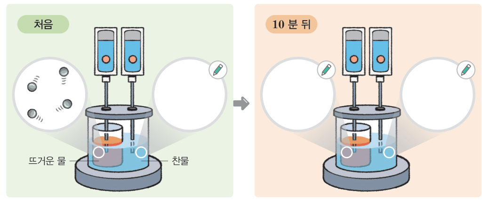
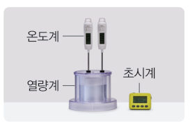
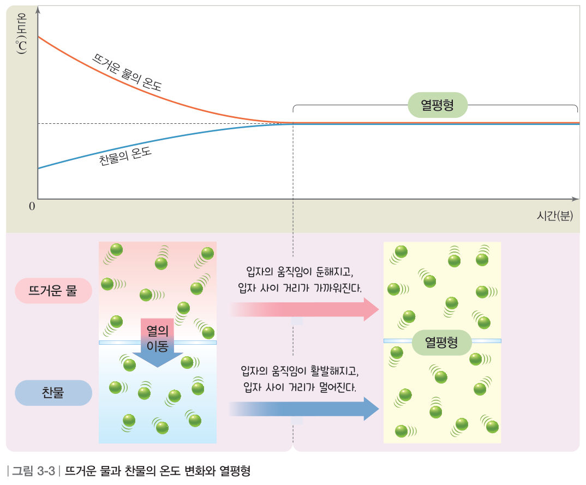
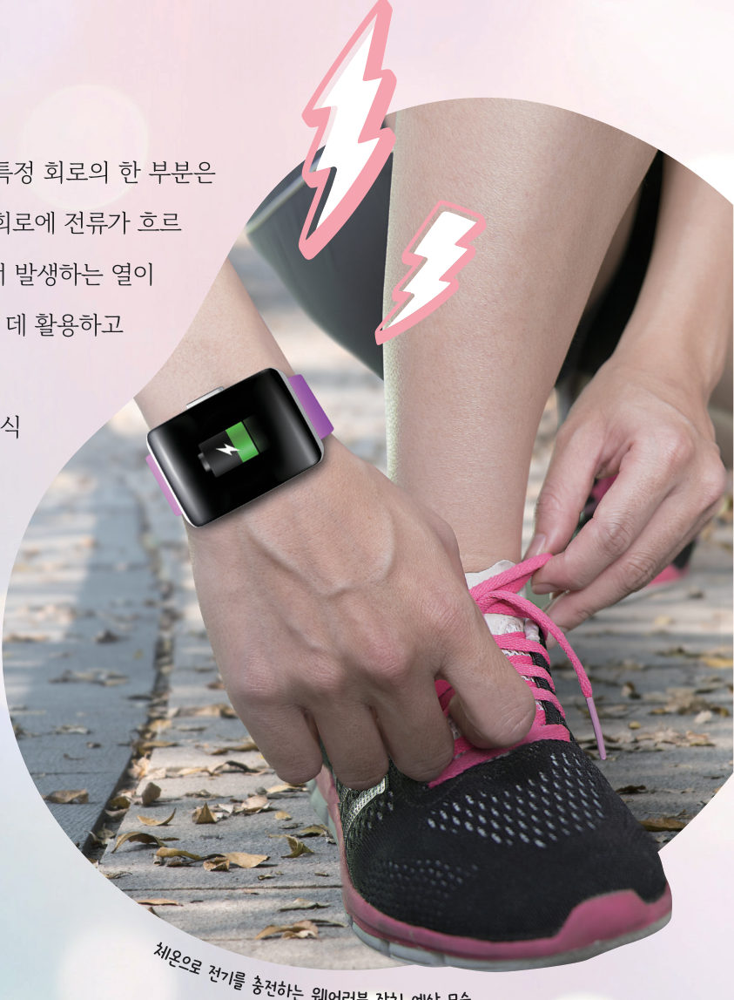
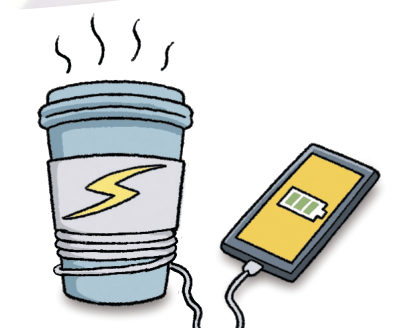

냉장고에 막 넣은 음료수는 왜 시간이 지나야 차가워질까? 가상 열량계에 뜨거운 물과 찬물을 넣고 온도 센서로 10분 동안 측정하며, 두 물의 온도와 입자의 움직임이 어떻게 변하는지 확인해 보자.
🎯 이 단원을 배우면 — 온도가 다른 두 물체가 열평형에 도달하는 과정을 입자의 움직임과 배치로 설명할 수 있다.
탐구온도가 다른 두 물체를 접촉할 때의 온도 변화 측정하기 86~87쪽
온도가 다른 두 물체를 접촉하면 어떤 변화가 일어날까?
미지근한 음료수를 차가운 얼음물에 담그면 시간이 지난 뒤 음료수가 차가워지고, 따뜻한 물에 담그면 시간이 지난 뒤 음료수가 따뜻해진다. 다음 탐구로 접촉한 두 물체의 온도가 시간에 따라 어떻게 변하는지 알아보자.
86쪽뜨거운 물이 담긴 알루미늄 컵을 찬물이 담긴 열량계에 넣는다.87쪽온도 센서를 꽂고 온도 측정 앱으로 측정한다.
어떻게 할까
열량계와 알루미늄 컵에 각각 찬물과 뜨거운 물을 담고, 알루미늄 컵을 열량계에 넣는다.
열량계의 뚜껑을 닫고 스마트 기기와 연결된 온도 센서를 뜨거운 물과 찬물에 각각 꽂는다. (주의: 온도 센서의 끝 부분이 열량계 바닥에 닿지 않게 한다.)
온도 측정 앱을 실행하여 뜨거운 물과 찬물의 온도를 측정한다.
10분 뒤 앱에 기록된 시간–온도 그래프를 확인한다.
⚠️ 뜨거운 물을 사용할 때 화상을 입지 않도록 주의한다. 준비물: 찬물, 뜨거운 물, 열량계, 알루미늄 컵, 온도 센서, 스마트 기기, 집게, 보안경, 내열 장갑, 실험복
3D 가상 실험가상 열량계와 온도 센서(MBL)
뜨거운 물과 찬물의 온도·양을 정하고 [측정 시작]을 누르면 10분 동안의 변화가 빠르게 재생된다. 3D 장치를 드래그해 돌려 보고, 오른쪽 아래의 입자 확대 창에서 두 물의 입자 움직임을 비교하자. 화살표의 굵기는 이동하는 열의 양을 나타낸다. (단, 열은 두 물 사이에서만 이동한다고 가정한다.)
재생 속도: 실제 10분 → 약 15초
열량계 3D · 드래그하여 돌리기
경과 시간0:00
🔴 뜨거운 물-
🔵 찬물-
온도 차이-
1자료 해석 시간이 지날수록 뜨거운 물과 찬물의 온도 차이는 .
280 ℃ 물 200 g과 20 ℃ 물 200 g을 접촉시켜 열평형에 이르면 두 물의 온도는 약 ℃가 된다.
3뜨거운 물의 양은 그대로 두고 찬물의 양만 늘리면 열평형 온도는 .
정리해 볼까모형 이용 — 입자의 움직임과 배치 그리기 87쪽

87쪽처음 뜨거운 물의 입자 모형이 그려져 있다. 나머지 세 원에 들어갈 모형을 골라 보자.
1처음 찬물 원에 들어갈 모형은 이다.
210분 뒤 두 원의 입자 모형은 . 열은 로 이동한다.
다르게 해 보기 · 온도계를 이용하여 접촉한 두 물체의 온도 변화 측정하기

① 뜨거운 물이 담긴 알루미늄 컵을 찬물이 담긴 열량계에 넣고, 각각에 온도계를 꽂는다. ② 1분 간격으로 뜨거운 물과 찬물의 온도를 측정하여 기록하고, 시간–온도 그래프로 나타낸다. 👉 가상 실험의 표가 바로 이 기록표예요. 측정이 끝나면 1분마다 값이 자동으로 채워져요.
교과서열평형 88쪽
뜨거운 물이 담긴 컵을 찬물에 넣으면 뜨거운 물의 온도는 낮아지고 찬물의 온도는 높아져서 시간이 지나면 온도가 서로 같아진다. 이는 뜨거운 물에서 찬물로 열이 이동하기 때문이다. 온도가 높은 물체에서 온도가 낮은 물체로 열이 이동하여 두 물체의 온도가 같아진 상태를 열평형이라고 한다.
접촉한 두 물체가 열평형에 이르기까지 각 물체를 구성하는 입자의 움직임과 배치도 달라진다. 예를 들어 뜨거운 물과 찬물을 접촉하면 그림 3-3과 같이 뜨거운 물은 열을 잃어 입자의 움직임이 둔해지고, 입자 사이의 거리가 가까워진다. 반면 찬물은 열을 얻어 입자의 움직임이 활발해지고, 입자 사이의 거리가 멀어진다.

그림 3-3뜨거운 물과 찬물의 온도 변화와 열평형
1그래프는 물체 (가)와 (나)를 접촉시켰을 때의 온도 변화이다. 열은 로 이동하고, 열평형 상태인 구간은 , 입자의 움직임이 둔해지는 물체는 이다.
2온도가 높은 물체 A와 온도가 낮은 물체 B를 접촉시켰다(열은 A와 B 사이에서만 이동). A의 온도는 지고, B 입자의 움직임은 점점 진다. A가 잃은 열의 양은 B가 얻은 열의 양과 .
스스로 확인하기86쪽 학습 목표를 달성했는지 확인해 보자 88쪽
1개념 확인 뜨거운 물과 찬물을 접촉하면 뜨거운 물은 입자의 움직임이 ( ), 입자 사이의 거리가 ( ).
2뜨거운 주전자에 찬물을 담으면 ( )에서 ( )로 열이 이동하여 물의 온도가 ( ).
3사고력 접촉식 온도계로 물체의 온도를 측정할 때는 온도계를 꽂고 잠시 기다린 뒤에 측정해야 한다. 그 까닭을 열평형과 관련지어 설명해 보자.
과학이 톡온도 차이를 이용해 전기를 만드는 기술 89쪽

89쪽체온으로 전기를 충전하는 웨어러블 장치 예상 모습
열전 기술은 열을 활용해서 전기를 만드는 기술이다. 특정 회로의 한 부분은 고온, 다른 부분은 저온으로 만들어 온도 차이가 생기면 회로에 전류가 흐르는 현상을 이용해 전기를 만든다. 현재는 자동차 엔진에서 발생하는 열이나 공장에서 발생하는 폐열을 재활용하여 전기를 만드는 데 활용하고 있다.
열전 기술을 연구하는 연구원들은 효율이 높은 열전 재료를 개발하고 있다. 열전 재료의 효율이 높아지면 체온으로도 전기를 생산할 수 있게 되며, 배터리를 충전하지 않아도 체온만으로 작동하는 웨어러블 장치를 만들 수도 있다.
1🧑🤝🧑 창의성 쑥! 우리 주변에서 열이 발생하여 온도 차이가 생기는 곳을 찾고, 그곳의 열을 활용하는 열전 기술 제품을 설계해 보자.

스스로 정리하기열평형 94쪽
2열평형
(1) 열평형: 온도가 높은 물체에서 온도가 낮은 물체로 열이 이동하여 두 물체의 이/가 같아진 상태
(2) 열평형 과정에서 입자의 움직임과 배치 • 온도가 물체: 입자의 움직임이 둔해지고, 입자 사이 거리가 가까워진다. • 온도가 물체: 입자의 움직임이 활발해지고, 입자 사이 거리가 멀어진다.
제출학생 정보 · 제출하기
모든 활동을 마친 뒤 제출하면 전체가 한 번에 채점되고 피드백이 나타나요. 답안은 선생님 스프레드시트(중1 탭)에 기록돼요. 가상 실험의 마지막 측정 조건도 함께 저장돼요.